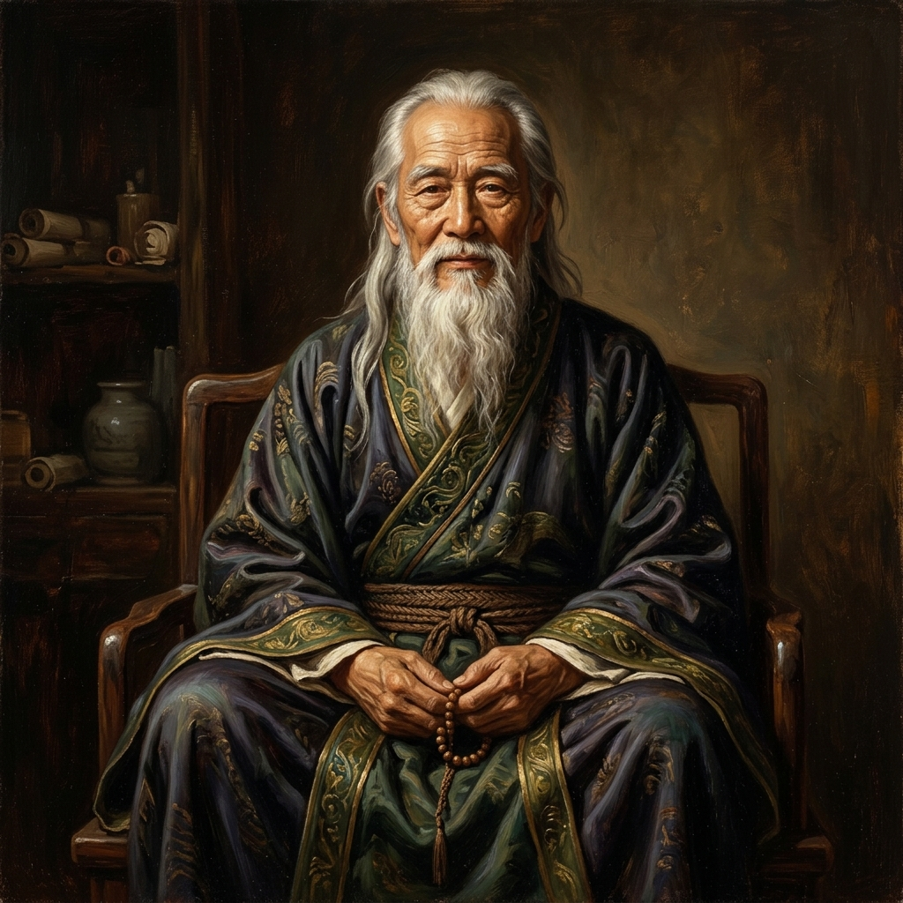

Sens & Discernement
Cultiver la simplicité, le détachement conscient et la capacité à reconnaître ce qui mérite réellement notre attention.
💡 Les trois principes fondamentaux du parcours
Examiner ce qui mérite réellement notre énergie
Notre attention est notre ressource la plus précieuse ; la gaspiller dans l'insignifiant détruit notre paix.
Cultiver une simplicité volontaire
La simplicité n'est pas un manque, mais le raffinement suprême qui fait de la place pour l'essentiel.
Choisir selon ses valeurs plutôt que selon la pression extérieure
L'alignement entre ce que nous croyons et ce que nous faisons est la source unique de la véritable estime de soi.
🎯 Pratiques & Exercices d’Application
Exercices concrets pour ancrer cette sagesse dans votre quotidien :
Hiérarchie personnelle des valeurs
Sélectionnez vos 5 valeurs fondamentales et évaluez honnêtement si votre emploi du temps actuel les honore.
Semaine de désencombrement conscient
Chaque jour de la semaine, éliminez une distraction numérique ou un objet superflu pour alléger votre esprit.
Audit du temps et de l'attention
Notez pendant 3 jours où partent vos heures libres et réallouez consciemment 30 minutes quotidiennes au silence et à la réflexion.
📚 Articles et études approfondies

L'art des plaisirs simples : la sagesse lumineuse d'Épicure
Comprendre pourquoi la paix de l'âme naît de la suppression des craintes inutiles et des désirs démesurés.
Lire l’article →
Pourquoi nous cherchons le bonheur au mauvais endroit
Démystifier les mirages du statut et de la possession pour retrouver le sens véritable.
Lire l’article →
Pourquoi Schopenhauer considérait-il le bonheur comme une illusion ?
L'apaisement par la cessation des vaines convoitises et l'élévation de l'esprit.
Lire l’article →🏛️ Sages et penseurs de référence

Lao Tseu
Maître du DétachementA enseigné que celui qui sait se contenter de ce qu'il a possède un trésor inestimable.
Baruch Spinoza
Philosophe de la Joie & RaisonA démontré que la liberté suprême réside dans la compréhension rationnelle de la nature et de soi.
Viktor Frankl
Penseur du Sens ExistentielProuve que l'être humain est motivé par la volonté de trouver un sens à sa vie.